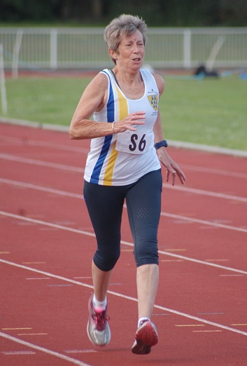
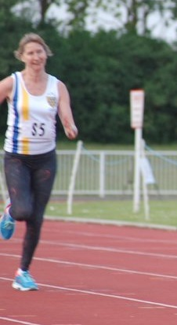

I was team manager at this first meeting of the season Geoffrey being on holiday, writes Grazia Manzotti. I can say it wasn't my most successful evening, but after few days I can possibly see the positives and the funny side of it.

Let's celebrate success first. For the first time in years SAC had a ladies team. The ladies did very well, it was a debut for all of them. Sylvia Lewis won the W60 1500m in 8:29.2, amazing achievement, and she also did the W50 200m in 56.04 secs. It was the first time on the track ever for Sylvia and she won a race as well as achieving 12th place in the UK W65 rankings and setting W65 club bests in both her events! Pauline Dalton

was also first time racing on the track, and was third in her 1500m race, W35, in 6:14.9, shattering the club W50 best performance by over 20 seconds. She was also third in her 200m race at W50 in 37.3 secs, ranking 24th in the UK this year and taking over four seconds off the club best performance, a remarkable success. As for Grazia Manzotti, well I think I did well in my 200m with 36.9 secs first time ever and I am not a sprinter (although Geoffrey tells me this race ranks me 32nd in the UK for my age group); let's not talk about my 1500m where for the first time ever it was DNF.
The SAC men, mostly more experienced, did really well. Paul English won the 200m M35 with an impressive 25.9 secs (pictured above), currently 19th in the UK rankings; Duncan Cochrane was 3rd M60 in the 1500m with 5:56.9, Dan Witt was 4th M35 in the 1500m with 5:18.8 amazing time and I believe a PB. Keith Dowson was 3rd M50 in the 1500m with 5:45.8, and 6th in his 200m race because he pulled his hamstring. Colin Tester was 4th in the M50 200m, a newcomer to track events, but achieving a very respectable 32.7 secs. Also the SAC men did plenty of field events with great results:
Paul English was 2nd in the M35 discus with 21.33m, close to his 2016 club best.
Keith Dowson: 5th in the M50 discus with 14.54m, which looks to be a PB.
Duncan Cochrane: 3rd in the M50 long jump with 3.35m.
Also Colin Tester did the long jump but this performance has been missed out of the results and we hope it will go in, adding a couple more points to the club score.
A few things went wrong, horrid traffic getting to Ashford, three of the guys got injured, as Keith Dowson put it in one of his emails this happens when you try and get old people sprinting! My 1500m race, a bit of a mess with the numbers and problems with our results. The ladies didn't have enough ladies for a relay and the men had to pull out of their relay because of injury.
Overall, both men's and ladies' teams are standing 4th in the division 2 meeting and series.
Next race Friday 15th in Tonbridge, more details on emails, I am sure it was such fun that we want do it all again! Can we please have enough ladies for a relay.
See links to the videos here (thanks to Mark Pitcairn-Knowles for agreeing to share the videos and for the photos too), and the results (subject to expected updating) here.